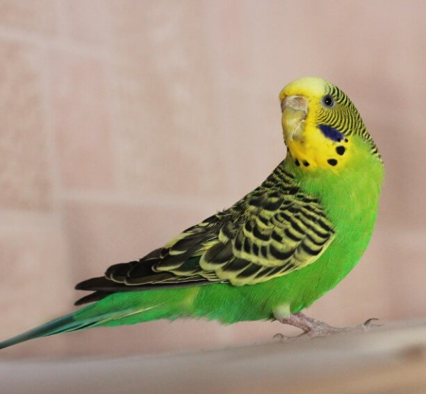
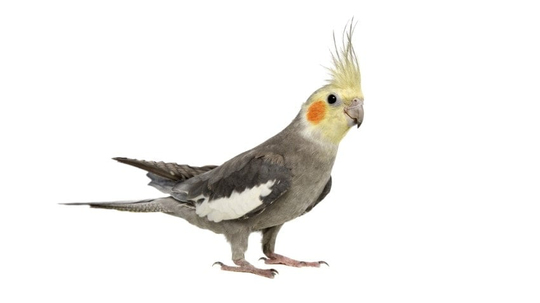
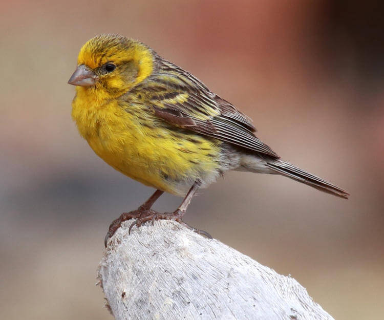
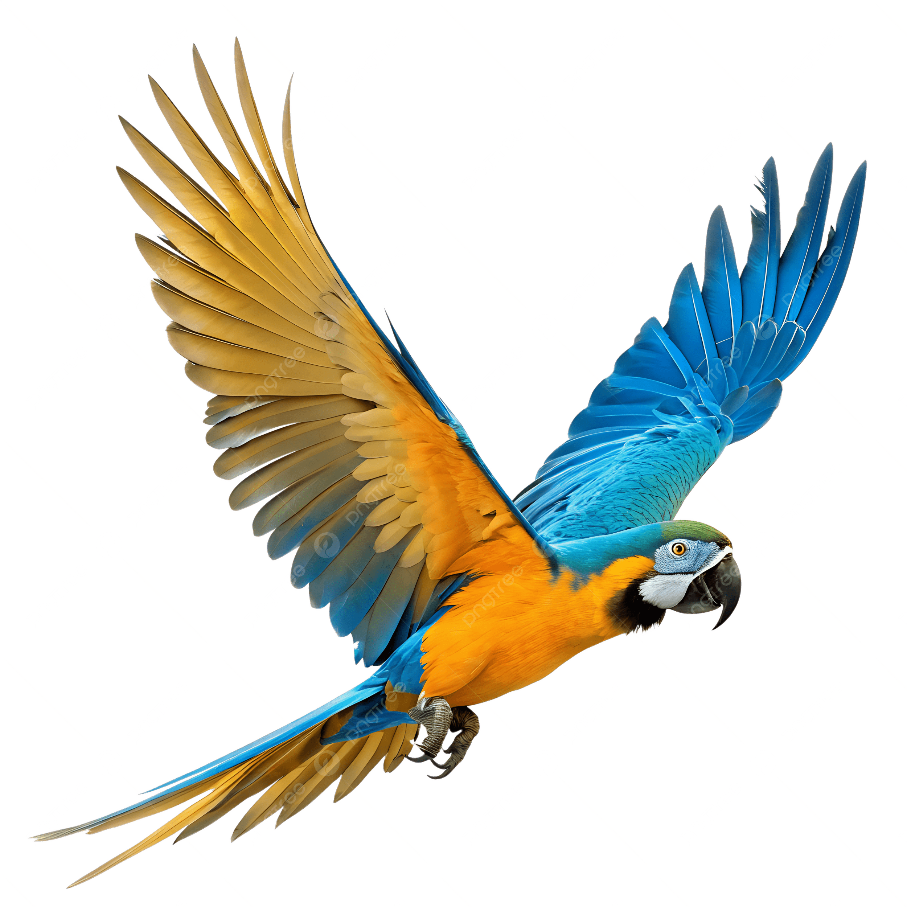

👑 Kuş Cinsleri Ansiklopedisi
Ses tonları, konuşma yetenekleri ve boyutlarıyla en popüler kanatlı dostlarımızın özellikleri.

Muhabbet Kuşu
Köken: Avustralya
Karakter: Sosyal, oyuncu, taklitçi. Erkekleri kelime öğrenmeye çok yatkındır ve bakımı en kolay kuş türüdür.

Sultan Papağanı
Köken: Avustralya
Karakter: Cana yakın, duygusal, ıslıkçı. Başlarındaki ibikleri ve kırmızı yanaklarıyla çok karakteristik canlılardır.
.jpg)
Cennet Papağanı (Lovebird)
Köken: Afrika
Karakter: Hareketli, meraklı, eşine sadık. Çift olarak bakılması önerilir, renkleri son derece canlıdır.

Kanarya
Köken: Kanarya Adaları
Karakter: Bağımsız, sakin, harika ötücü. Doğrudan el teması sevmezler ancak melodik ötüşleriyle bilinirler.
.jpg)
Hint Bülbülü (Zebra Finch)
Köken: Avustralya
Karakter: Ürkek, aşırı hareketli, sosyal. Çıkardıkları minik trompet sesine benzer seslerle çok eğlencelidirler.
.jpg)
Jako (Afrika Gri Papağanı)
Köken: Orta Afrika
Karakter: Üstün zekalı, hassas, mükemmel konuşkan. Cümle kurabilirler ve insan zekasına en yakın ırklardandır.

Ara Makav (Macaw)
Köken: Güney Amerika
Karakter: Dev boyutlu, oyuncu, çok gürültülü. Muazzam renk tonları ve güçlü gagaları vardır, ilgi isterler.
🏠 Eviniz İçin Doğru Kuş Seçimi
- 🤫 Gürültü ve Apartman Uyumu: Kanarya ve Muhabbet Kuşu sakin ötüşleriyle apartmanlar için en ideal seçimdir.
- 🗣️ Konuşma Beklentisi: Amacınız kuşa kelimeler öğretmekse Muhabbet Kuşu (Erkek) veya Jako ilk tercih olmalıdır.
- ⏳ Ömür ve Sorumluluk: Muhabbet kuşları 8-10 yıl yaşarken, büyük papağanların ömrü 50 yılı geçebilir.
⚠️ Irklar Hakkında Doğru Bilinen Yanlışlar
❌ Yanlısh: "Tüm papağanlar doğar doğmaz hemen konuşmaya başlar"
Hiçbir kuş ırkı direkt konuşmaz. Konuşma tamamen sahibinin ilgisine, güven bağına ve aylarca süren sabırlı ses tekrarlarına bağlıdır.
💡 Altın İpucu: Çift Kuşlar Zor Konuşur
Eğer bir kuşu çift olarak (yanına eş alarak) beslerseniz, tüm ilgisini eşine vereceği için size odaklanmaz ve konuşmayı öğrenmesi çok daha zorlaşır.